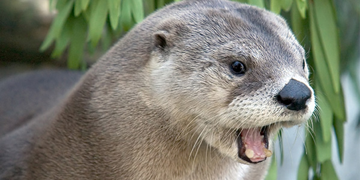

River otters are mammals that have thick, waterproof fur and are excellent swimmers. That is due to the fact that they have webbed feet and a long, narrow body and a flat head which helps their movemnt in water. They also have a long, strong tail that helps them with swimming. They can stay underwater for up to eight minutes. But that doesn't mean they are slow on land, the can run as fast as 15 miles an hour and can slide even faster.
